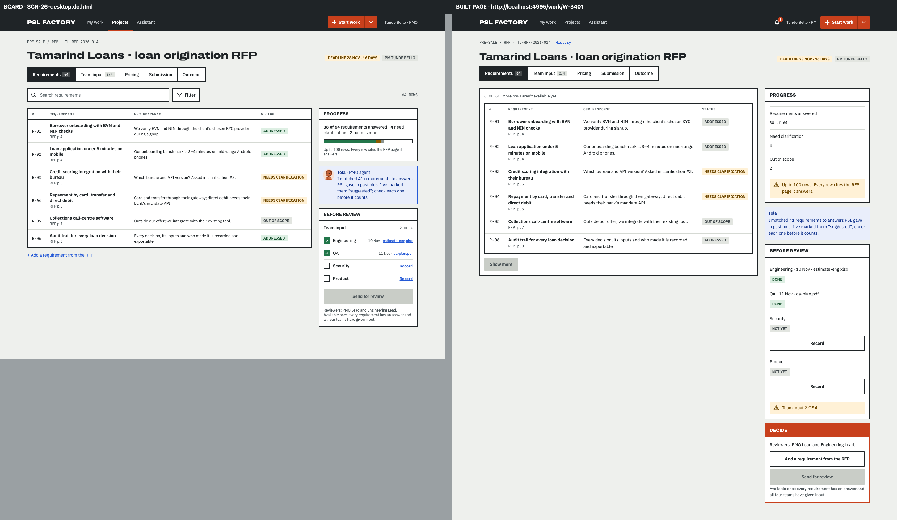
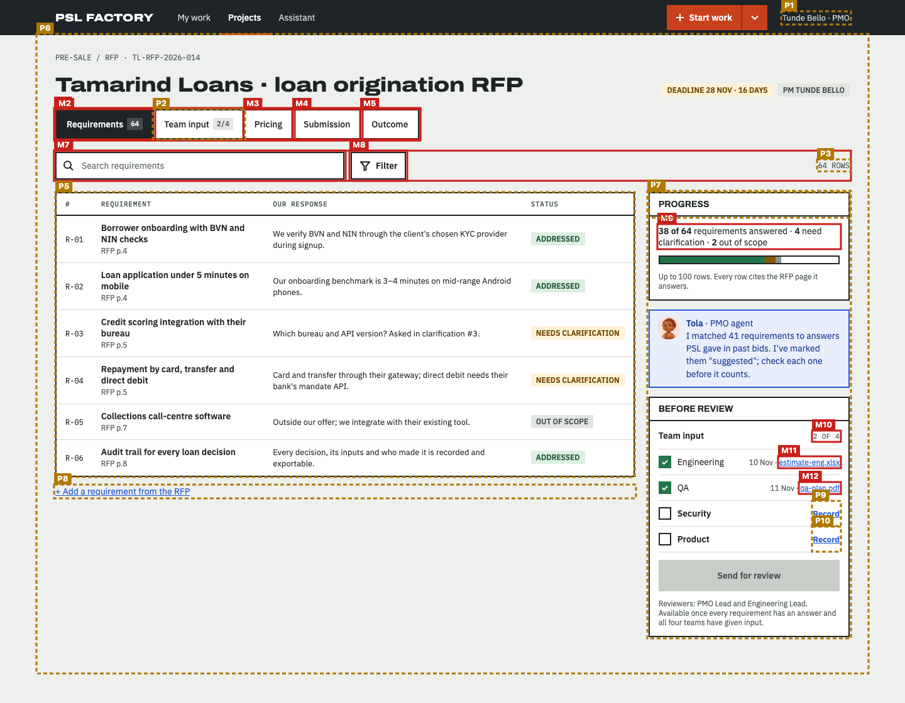
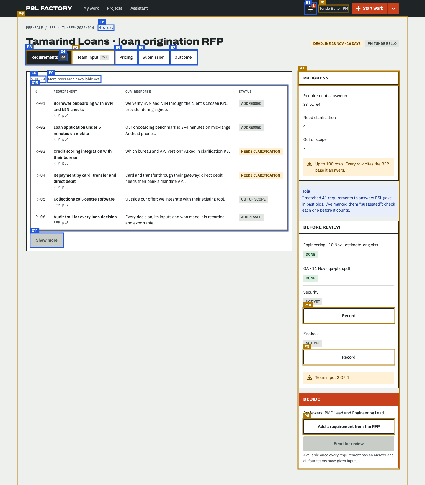
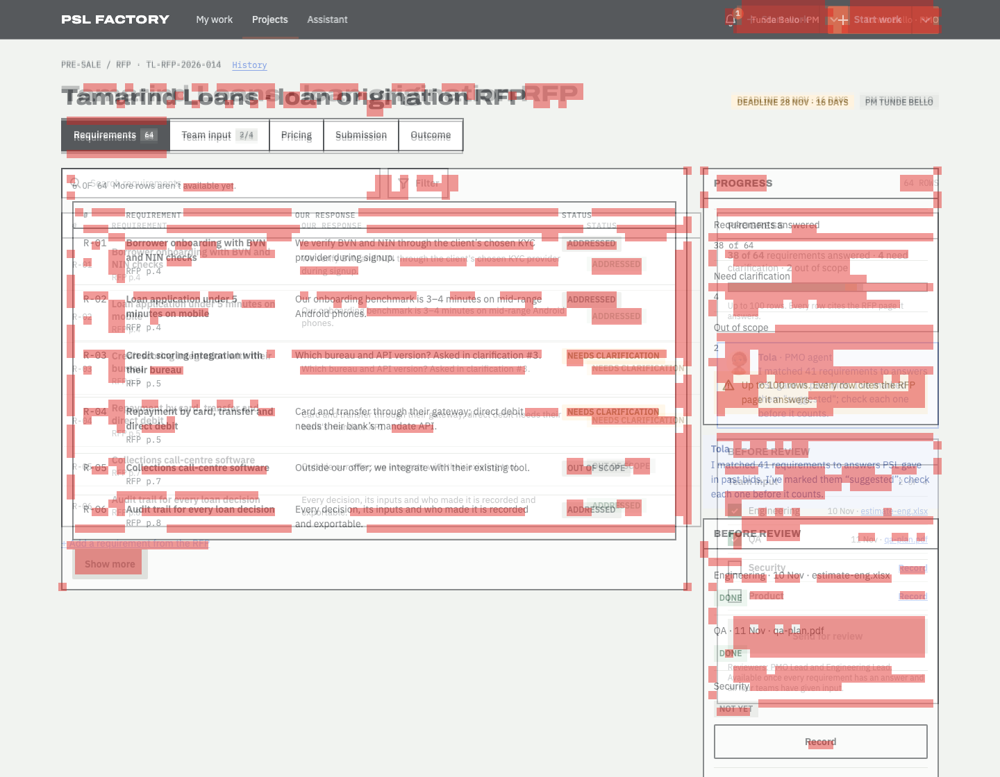

Does the built page follow the design?
Board SCR-26-desktop.dc.html compared with http://localhost:4995/work/W-3401 at 1440px wide · 2026-11-19T09:39:34.258Z
- Every board item is on the page or approved as an exception (100%).
- Visual match 74.7 is below 90.
- 10 item(s) are in a different place; review them (not part of the pass rule unless --strict-position).
32 of 44 things drawn on the board were found on the page: headings, buttons, links, search and filter controls, table columns, labels and the repeated rows (counted once, not per row).
How closely the shapes line up: blocks, bars, tables and text areas, compared in 12px squares over the top 1120px. Different words in the same place still count as a match, so sample data does not lower the score.
Missing from the built page 12
Drawn on the board but not found on the page. Each one must be built, or approved as an exception.
| # | What | Text on the board | Where on the board | Exception |
|---|---|---|---|---|
| M1 | Tabs | RFP | left, 174px down | approved Conflicts 7: F-18's RFP frame draws its tabs as a nav of links and plain text (not a tablist), with the returned labels and counts. · builder proposal, pending design engineer |
| M2 | Tab | Requirements 64 | left, 176px down | approved Conflicts 7: F-18's RFP frame draws its tabs as a nav of links and plain text (not a tablist), with the returned labels and counts. · builder proposal, pending design engineer |
| M3 | Tab | Pricing | left, 176px down | approved Conflicts 7: F-18's RFP frame draws its tabs as a nav of links and plain text (not a tablist), with the returned labels and counts. · builder proposal, pending design engineer |
| M4 | Tab | Submission | middle, 176px down | approved Conflicts 7: F-18's RFP frame draws its tabs as a nav of links and plain text (not a tablist), with the returned labels and counts. · builder proposal, pending design engineer |
| M5 | Tab | Outcome | middle, 176px down | approved Conflicts 7: F-18's RFP frame draws its tabs as a nav of links and plain text (not a tablist), with the returned labels and counts. · builder proposal, pending design engineer |
| M6 | Search area | (search area) | middle, 242px down | approved Conflicts 10: no read can search (G-26-2); the toolbar is drawn inert as F-17 draws it, with no search box. · builder proposal, pending design engineer |
| M7 | Search box | Search | left, 242px down | approved Conflicts 10: no read can search (G-26-2); the toolbar is drawn inert as F-17 draws it, with no search box. · builder proposal, pending design engineer |
| M8 | Filter | Filter | middle, 242px down | approved Conflicts 10: the inert Filter button is drawn only when the response returns filters. · builder proposal, pending design engineer |
| M9 | Text | 38 of 64 requirements answered · 4 need clarification · 2 out of scope | right, 359px down | approved Conflicts 9: Progress comes back as three returned figures with a note, and the checklist count as a returned tag; the board's one-sentence version is not built. · builder proposal, pending design engineer |
| M10 | Text | 2 OF 4 | right, 688px down | approved Conflicts 9: Progress comes back as three returned figures with a note, and the checklist count as a returned tag; the board's one-sentence version is not built. · builder proposal, pending design engineer |
| M11 | Link | estimate-eng.xlsx | right, 729px down | approved Conflicts 16: the file names are returned detail text on the checklist row, not links. · builder proposal, pending design engineer |
| M12 | Link | qa-plan.pdf | right, 770px down | approved Conflicts 16: the file names are returned detail text on the checklist row, not links. · builder proposal, pending design engineer |
In a different place 10
Found on both, but in a different order, side of the page, or area (for example inside the table frame instead of above it).
| # | What | How it moved |
|---|---|---|
| P1 | Text Tunde Bello · PMO |
|
| P2 | Tab Team input 2/4 |
|
| P3 | Text 64 ROWS |
|
| P4 | Text PROGRESS |
|
| P5 | Table |
|
| P6 | Main area |
|
| P7 | Side panel |
|
| P8 | Link + Add a requirement from the RFP |
|
| P9 | Link Record |
|
| P10 | Link Record |
|
Looks different 14
Found on both, but styled differently: table rows and cells, fonts, colours, underlines, outlines, corners. Not part of the score; check each one against the board.
| What | Difference |
|---|---|
| Link "Projects" |
|
| Link "Start work" |
|
| Link "More ways to start" |
|
| Text "PRE-SALE / RFP · TL-RFP-2026-014" |
|
| Tab "Team input 2/4" |
|
| Text "64 ROWS" |
|
| Link "+ Add a requirement from the RFP" |
|
| Text "PROGRESS" |
|
| Text "Up to 100 rows. Every row cites the RFP page it answers." |
|
| Text "BEFORE REVIEW" |
|
| Text "Team input" |
|
| Link "Record" |
|
| Link "Record" |
|
| Link "Send for review" |
|
On the page but not on the board 11
Built but not drawn. Some are expected (data, status lines); the rest need the design engineer to approve or remove them.
| # | What | Text on the page | Where on the page |
|---|---|---|---|
| E1 | Button | Alerts, 1 unread | right, 11px down |
| E2 | Link | History | left, 86px down |
| E3 | Navigation area | RFP | left, 170px down |
| E4 | Text | 64 | left, 185px down |
| E5 | Text | Pricing | left, 172px down |
| E6 | Text | Submission | middle, 172px down |
| E7 | Text | Outcome | middle, 172px down |
| E8 | Text | 6 OF 64 | left, 259px down |
| E9 | Text | More rows aren’t available yet. | left, 258px down |
| E10 | Section | Table | middle, 290px down |
| E11 | Pagination | Show more | left, 791px down |
Pictures
The red dashed line on the side-by-side marks how far down the visual score looks. On the marked board, red boxes are missing items (M). On the marked page, amber boxes moved (P) and blue boxes are extra (E). In the difference picture both screens are laid over each other and red squares are where the shapes do not line up.






Notes about this run
- Images: /_blob/ images are served from /Users/Hunchoo/psl-factory/design/mascots/canvas-assets.json (19 mapped).
Found on both (32)
| Navigation area | Main | |
| Text | PSL FACTORY | |
| Link | My work | |
| Link | Projects | |
| Link | Assistant | |
| Link | Start work | |
| Link | More ways to start | |
| Text | Tunde Bello · PMO | page: Tunde Bello · PM |
| Main area | ||
| Text | PRE-SALE / RFP · TL-RFP-2026-014 | page: PRE-SALE / RFP · TL-RFP-2026-014History |
| Heading | Tamarind Loans · loan origination RFP | |
| Text | DEADLINE 28 NOV · 16 DAYS | |
| Text | PM TUNDE BELLO | |
| Tab | Team input 2/4 | |
| Text | 64 ROWS | page: Requirements 64 |
| Table | ||
| Table column | # | |
| Table column | REQUIREMENT | |
| Table column | OUR RESPONSE | |
| Table column | STATUS | |
| Link | + Add a requirement from the RFP | page: Add a requirement from the RFP |
| Side panel | page: Review and decide | |
| Text | PROGRESS | |
| Text | Up to 100 rows. Every row cites the RFP page it answers. | |
| Text | Tola · PMO agent I matched 41 requirements to answers PSL gave in past bids. I've marked them "suggested"; check each one before it counts. | page: I matched 41 requirements to answers PSL gave in past bids. I’ve marked them “suggested”; check each one before it counts. |
| Text | Tola | |
| Text | BEFORE REVIEW | |
| Text | Team input | page: Team input 2 OF 4 |
| Link | Record | |
| Link | Record | |
| Link | Send for review | |
| Text | Reviewers: PMO Lead and Engineering Lead. Available once every requirement has an answer and all four teams have given input. | page: Available once every requirement has an answer and all four teams have given input. |
How the scores are worked out
Element coverage. The board is drawn locally from its own template and sample data. From the drawn board the check lists everything a person sees or uses: page areas (navigation, main, search), headings, links, buttons, form fields with their labels, table column headers, filter, search and pagination controls and fixed labels. Rows drawn from sample data count once, as a pattern ("table rows with these columns"). Each item is looked for on the page by its kind and its words (ignoring capitals, curly quotes and small wording differences, at least 80% similar). Coverage is found ÷ drawn. Order is compared in reading order (top to bottom, left to right); an item is "moved" when it breaks the order, sits on the other side of the page, or sits inside a different area.
Visual match. Both full-page screenshots are compared in 12px squares after a light blur, over the board's height (1120px; the page is 1642px). Only squares with something in them count. A square matches when its colours line up, or when both have text or lines there. Score = matching ÷ counted squares (5156 of 6902). Over every square including empty background it would be 84.5.
Technical details
Board file: /Users/Hunchoo/psl-factory/design/canvas/project/SCR-26-desktop.dc.html
Viewport: 1440×1120
Report data: report.json
Exceptions file: /Users/Hunchoo/psl-factory/delivery/features/F-37/fidelity-exceptions.json